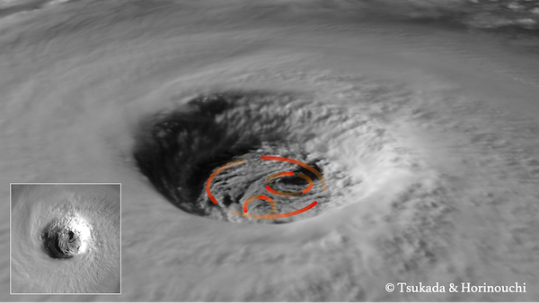

連絡先
- taiga.tsukada🌪colostate.edu
- CIRA, CSU, Foothills Campus
1375 Campus Delivery
Fort Collins, CO, 80523-1375
所属研究室
Tropical Cyclones Group
Cooporative Institute for Research in the Atmosphere
Colorado State University
自己紹介
主に衛星観測を用いて台風の内部構造・力学に関する研究をしています。
台風の心臓部とも言われる内部コア領域の理解を通じて台風の予報精度向上を目指します。
サイエンスだけでなく、現業にも寄与する研究を志しています。
